The uOttawa Rocketry team was founded in Summer, 2016. My colleagues and I planned to design and fabricate a hybrid-propellant rocket for a competition called the Intercollegiate Rocket Engineering Competition (IREC). IREC is held in Utah and universities from around the world participate in it each year. Before beginning a design encompassing all parts of the rocket we decided to design and build the engine first, since it is the main component of the rocket. In the next section I will give a brief introduction to hybrid-propellant rockets and what our goals were in terms of fabricating the engine.
Hybrid Rocket engines are reliant on motors that are composed of a solid fuel and a liquid oxidizer. This is unlike solid or liquid rocket engines where both fuel and oxidizer are either solid or liquid.
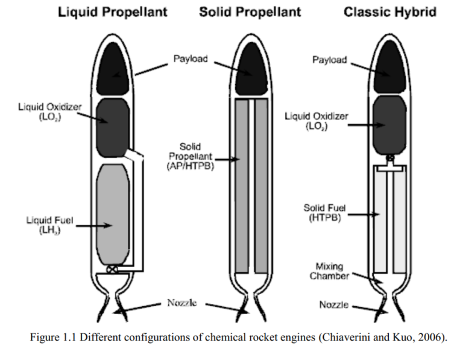The above figure shows a classic hybrid rocket engine on the far right. This is the type of engine our team was aiming to make. Upon further research we found that the major components we needed to think about design-wise were the following:
We chose Nitrous Oxide (N2O) as the oxidizer because of it’s accessibility, safety and its wide use among student teams. We explored other oxidizers such as liquid oxygen, hydrogen peroxide, Peroxide (HTP) and RFNA but quickly realized that they would be either too difficult to obtain or too dangerous to use. Upon doing some further research we found that N2O is slightly sub-critical at room temperature and pressure. This means that when N2O is enclosed in a tank it can coexist as both liquid and vapor. When the tank valve is opened, changes in pressure causes the liquid N_2O to boil off and the increase in vapor keeps the tank pressure relatively stable (self-pressurization). The willingness for N_2O to keep the tank self-pressurized implies that our injector plate can be crudely designed to still work effectively. Other gases that can’t self-pressurize are at risk of back-flow; where the pressure inside the tank reduces substantially causing the combustion to flow back into the oxidation tank and potentially cause an explosion. There was one downside however in choosing N2O which relates to N2O’s density. We wanted to use the liquid portion of N2O , but due to it’s density, it falls to the bottom of the tank and gives us uneasy access to it. The way we went around this problem will be discussed in the Nitrous Oxide Test Stand section.
Paraffin, also known as candle wax, was our choice for fuel. Paraffin as a fuel has a couple of benefits and it is listed here:
The process we decided to use when fabricating the fuel grain involved melting the paraffin in a water bath and then slowly pouring paraffin into an ABS pipe while keeping a smaller pipe rotating in the center. The smaller pipe enables the grain to have the inner diameter it needs to allow the oxidizer to flow through.
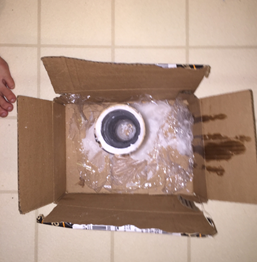The flow of N2O will dictate the rate of combustion and therefore control is important. We decided to use a solenoid valve because they can be controlled remotely as they work through electricity and no mechanical components are needed. We used CGA-326 valve which are safe for nitrous oxide use and will also work with the nitrous oxide tank fitting that we have. Designing and building the injector plate was relatively easy to do. As discussed before, the self pressurizing and regulating feature of the N2O allowed us to have a simple design.
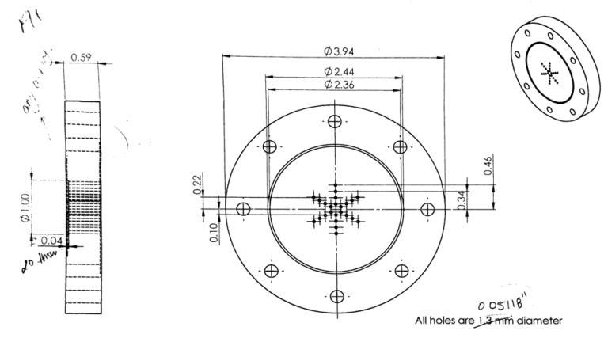We drilled twenty-four 0.05118′ outlets into the injector plate as can be seen in the image above. This allowed atomization of N2O. The following is a cold flow test of N2O through the injector plate
We were able to design the nozzle using rocket equations. After choosing the output flow we wanted (Mach 1 at the throat) we were able to determine nozzle throat area, exit area and subsequently the rest of the geometry.
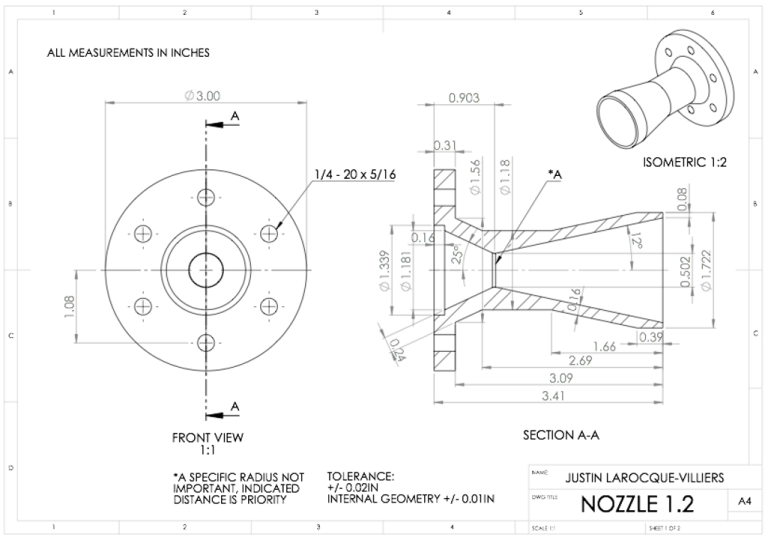After determining the nozzle dimensions we were able to determine combustion chamber dimensions as well.
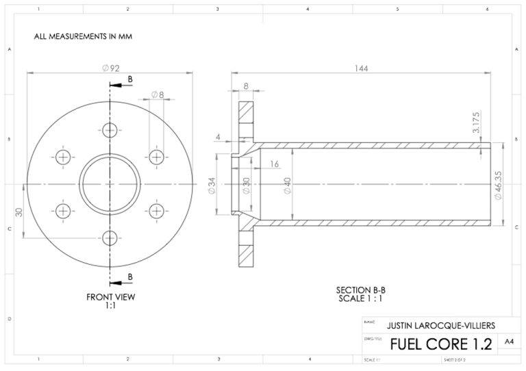The nozzle would be attached to the combustion chamber through 6 quarter inch bolts.
As mentioned previously the need to access the liquid portion of the oxidizer tank posed a challenge for the team. The way we resolved this problem is by building a stand that would orient the tank 60 degrees from the vertical. A schematic of the design is shown below
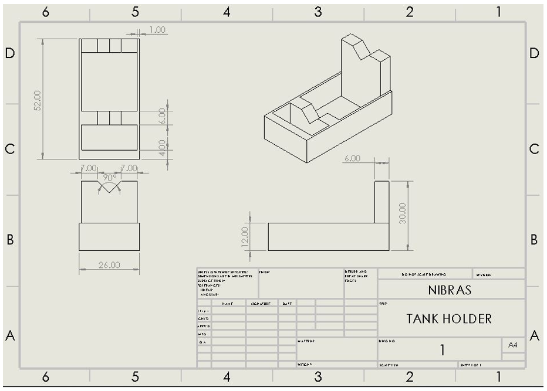We build the stand using plywood and wood glue. We used strap buckles to prevent the tank from sliding off. The following image shows our completed stank with the tank
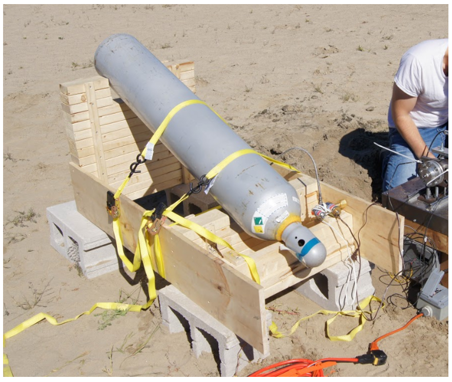Test stands for rocket engines can either be vertically oriented or horizontally. Ours was horizontal. The image below shows our design which was made of large planks of wood nailed together to provide an even elevated surface for the motor to rest on. A thin layer of sheet metal was bolted on from the top to provide protection and have a stronger foundation for the railings and subsequent stopper that needed to be bolted into the table.
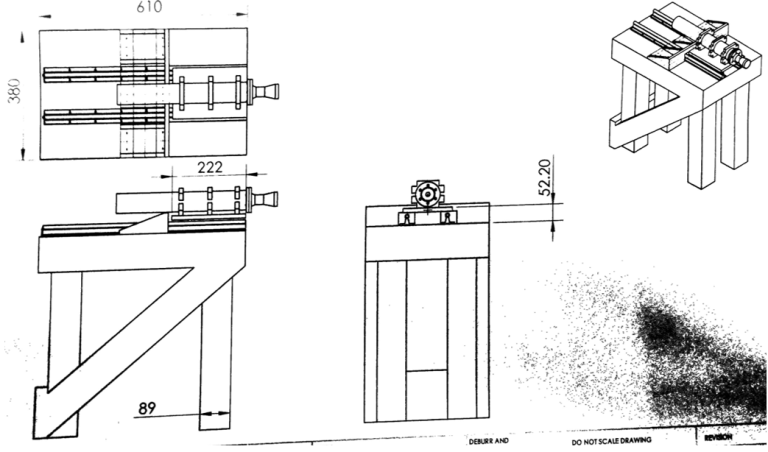The image below shows a linear rail system an aluminum platform mounted on to it (allowing sliding). To the platform the motor was bolted down using a pair of 3 aluminum made clamps.
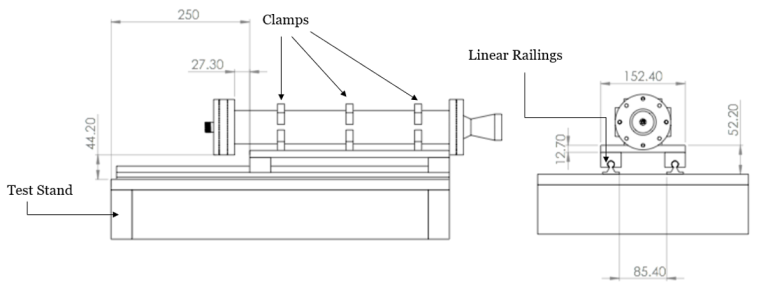The configuration of the test stand to the motor is as follows:
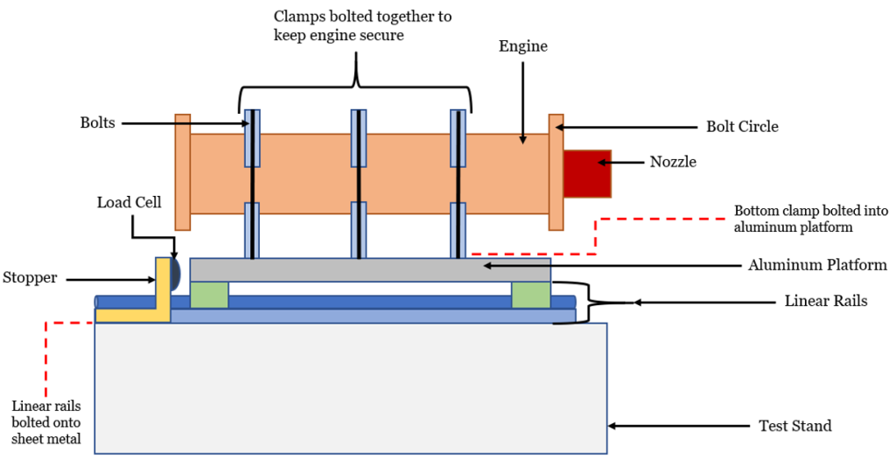For a clearer idea of how the system worked please refer to this image of the unfinished test stand to get a clearer visualization
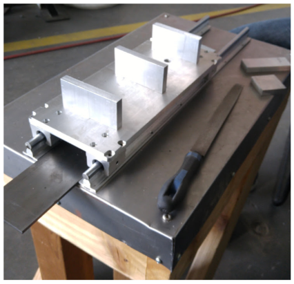On the stopper, which prevented the engine from flying off the rails when turned on, we attached a load cell which recorded thrust measurements. All in all, the following image is our final setup before testing
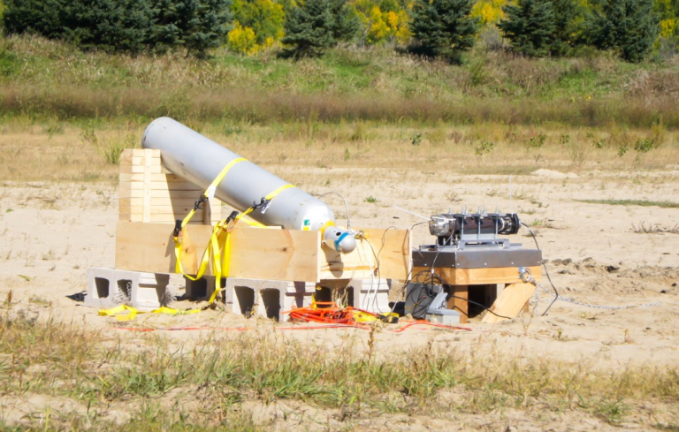A video showing the engine running: